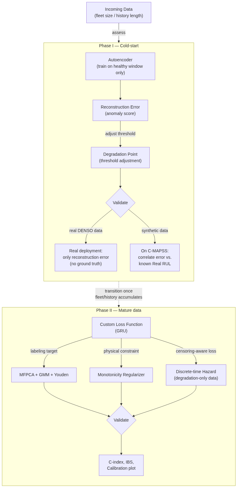

Dynamic Risk Prognostics / Proportional Hazard Assumption /
Table of Contents
- 1. Diagram
- 2. Problem Statement
- 3. Reality Facts
- 4. Brain Storm Section
- 5. Best Features
- 6. Potential Question
- 7. How to evaluate our model
- 8. Phase Description
- 9. Suggestion
- 10. TODO Question & Notes
1. Diagram

2. Problem Statement
2.1. Denso’s problem
- So they want us to create something that can generate anomaly data, to balance the data, but the purpose is still : to help the model be more accuracy in disadvantages condition.
2.2. Analyze their solution
- Their solution : create a generator that can distribute only possible anomaly, but it still need an amount of real data of that anomaly to actually make it happen. Though they will provide us some, but i think this solution is not good.
2.3. Our solution
- Our solution expect the disadvantages that happen in real life, and should be good enough even with only truncated data, and work in real-time
- They did also provide 5M1E type of data which mean anomaly data that are verified by human
[ ]also they want a recall/F1 before and after (Youden Index)
3. Reality Facts
3.1. The data is not that beautiful …
- In reality, we can’t just let the machine broken down just to get the data but always fix it after some degree of degradation signals
- Therefore, we need to consider that our data will always contain mostly health phase
3.2. The data isn’t avaiable
- One more thing is that if we have a new machine and get it into work. We can’t just have all of it data immediately …
- That’s why we should consider this aspect
3.3. The engine won’t work in sync
- We should consider that all the engines should work in different term of its
3.4. Recored data maybe not in the right shape
- The data maybe provide at form of minute, second …
3.5. The engine won’t behave the same after getting maintainance
4. Brain Storm Section
4.1. Preprocess Phase
- So FFT could be applied to the sensor that have repetation behaviour. We should change to Frequency Domain as it should lower the cost to run by apply a Physical Fact …
4.2. Phase I : Con1d Autoencoder [this paper] & [this]
4.2.1. Structure
- Basically the combination of Autoencoder (Neural Network) & Con1d is a type of structure inside the encoder/decoder of AE
- So với Dense thuần (fully-connected) — tiết kiệm tham số cực lớn, quan trọng với dữ liệu ít. Nếu dùng Dense, bạn phải “trải phẳng” window thành một vector 630 số (30×21), rồi nhân với ma trận trọng số đầy đủ để nén xuống latent — số tham số tỷ lệ với 630 × kíchthướclớpẩn, rất lớn. Conv1D chỉ cần học kernel nhỏ (5 giá trị × số channel) dùng lại nhiều lần — ít tham số hơn nhiều bậc, đúng tinh thần “lightweight, tránh overfit với ít dữ liệu suy thoái” đã theo xuyên suốt.
- Tính bất biến theo vị trí (translation invariance) — lợi ích thực sự cho bài toán suy thoái. Vì kernel dùng chung cho mọi vị trí, Conv1D nhận diện được một pattern cụ thể (ví dụ một cú tăng đột biến rung động) bất kể nó xảy ra ở cycle nào trong window — window bắt đầu suy thoái ở cycle thứ 3 hay cycle thứ 20 của chính nó đều được nhận diện như nhau. Dense thuần không có tính chất này — nó học riêng biệt cho từng vị trí, nên cùng một pattern xuất hiện ở vị trí khác sẽ bị coi là “chưa từng thấy”.
- So với LSTM-AE (ý tưởng ban đầu bạn từng đề xuất) — xử lý song song, nhanh hơn, và đã có bằng chứng thực nghiệm ủng hộ cho đúng bối cảnh công nghiệp. LSTM phải xử lý tuần tự từng cycle một (cycle 2 phải đợi cycle 1 xử lý xong), trong khi Conv1D tính đồng thời mọi vị trí trong window — nhanh hơn đáng kể khi window đã cố định độ dài ngắn (30 cycle, không cần mô hình phụ thuộc rất dài như GRU-hazard ở Phase II phải làm). Đây cũng chính là kỹ thuật được xác nhận tốt trong nghiên cứu công nghiệp đã tìm trước đó: temporal convolutional autoencoder đạt hiệu năng ổn định nhất so với Isolation Forest khi mô hình hóa động lực học không tuần hoàn, đa quy mô trong dữ liệu thật — không phải lựa chọn ngẫu nhiên, mà có tiền lệ cụ thể trong đúng loại bài toán industrial anomaly detection.
4.2.2. Purpose
- Focus more on individual … therefore, we can pass the The data isn’t avaiable problem
- Its purpose is like a sensor which will measure the anomaly which are mainly affect how an engine work.
4.3. Transition Phase
- Recognize if the quantity and quality of current cluster to move on to next phase
- Is it enough for quantity of engine?
- Do all of that engine has anomaly detected?
- So basically, if there are 50 engines in the dataset, but only 3 of them are satisfy the requirement, then can we start the phase II?
- Yes we can because of GRU-hazard was made for that. All of the engine will still go to the phase II, they were all used to learn, if one was short , it was learned short, if one was long, it was learned long. Size is not a problem, as they was just ’knowledge’ for the ML to learn. The final result will only be accepted for 3 engines which are satisfy the requirement, the other will be considered as not worth to trust yet, up until they are satisfied. I think, the 3 engines should be evaluated more as the more informations with other engines, the better
- Also we should consider create a Keeper that should only allow engine which has cycles more than X cycles … Imagine a cycle with only 3-4 , it won’t give us any valuable information …
4.4. Phase II : GRU - Hazard
4.4.1. Purpose
- Focus more about a cluster of unit
- This focus mainly on find the moment we should step in to maintain , also if there is limitted in the number of engine which can be maintained simutaneously, this will provide the answer for which engine should be fixed first
- This will benefit us for decrease the cost for the maintenance.
4.4.2. Custom loss function
- Discrete-time Hazard
- is basically Probability
- has different loss function :
\[\text{Loss}_t = -[y_t \log(\hat{y}_t) + (1 - y_t) \log(1 - \hat{y}_t)]\]
- Monotonicity Regularizer (Ham rang buoc don dieu)
- basically to make sure the percantage of the engine which will broken down can decrease … (ban chat chung phai tuyen tinh tang len)
5. Best Features
5.1. Categorical Feature
- After the process of AE, we can get its bottleneck to actually decrease its dimension to use as optional feature that can increase the accuracy as the more time past
- This paper is maybe the key for us to utilize this feature more, to get Interpretability & Visualization
- So to use this feature for the phase II, we should consider about :
- fusion time : early, mid or late
5.2. Interpretability?
5.3. Visualization?
6. Potential Question
6.1. Why for Tier 2/3
6.2. Why do u choose these model but not anything which are better? (transformer/lstm)
- Needed prove to show that these heavy model tend to be more overfitting than GRU
- Because it more efficient with small size of data
6.3. Is it really worth for phaseII?
- Một điểm tôi khuyên bạn thành thật thừa nhận thay vì né tránh — vì nó thực ra làm lập luận của bạn mạnh hơn: đúng là có trường hợp Phase II không cần thiết — nếu máy đó rẻ, hậu quả hỏng thấp, chi phí kiểm tra thủ công thấp, thì cứ có cảnh báo từ AE là đủ, không cần đầu tư thêm phân tích sâu. Việc bạn chủ động nói ra ranh giới này (“Phase II chỉ đáng đầu tư cho máy/dây chuyền có giá trị cao hoặc hậu quả hỏng nghiêm trọng — đúng kiểu máy nhập khẩu đắt tiền mà đề xuất ban đầu của bạn đang nhắm tới”) sẽ cho ban giám khảo thấy bạn hiểu rõ trade-off chi phí-lợi ích của chính hệ thống mình đề xuất, không chỉ cố bán “càng nhiều mô hình càng tốt” — đây chính xác là điều phân biệt một đề xuất kỹ thuật trưởng thành với một đề xuất chỉ đang khoe số lượng thuật toán.
6.4. How will the model work ?
6.4.1. Q : … when we have new data
- So basically when we have new data, the model won’t need to run all the pipeline again. It will only inference
6.4.2. Q : … when engine complete theirs cycle
- So after getting maintain, its previous data and label will obviously getting store
- Also we should consider re-train after a period of time …
6.4.3. Q : … on production line
- Because of its lightweight, it should work flawlessly on factory’s machine. Right?
6.5. Why not using RMSE for validate check?
7. How to evaluate our model
- Include C-index, IBS, Calibration and it is completely different from RMSE
7.1. Labeling + LSTM
7.1.1. Concordance Index (C-index)
- đây là chỉ số quan trọng nhất, tương đương AUC nhưng cho dữ liệu survival/censored. Nó đo: trong mọi cặp máy (i, j) mà bạn biết chắc máy nào “hỏng trước” (kể cả khi một trong hai bị censor, miễn còn so sánh được), mô hình có xếp hạng đúng thứ tự rủi ro không? C-index = 0.5 là đoán ngẫu nhiên, 1.0 là hoàn hảo. Đây là chỉ số bạn nên báo cáo làm “con số chính” thay thế vai trò của RMSE trước đây, vì nó đánh giá đúng bản chất bài toán bạn đang giải (xếp hạng rủi ro tương đối), không đòi hỏi biết chính xác RUL của từng máy censored.
7.1.2. Time-dependent Brier Score / Integrated Brier Score (IBS)
- đây là thứ gần với “MSE cho xác suất”: tại mỗi mốc thời gian t, so sánh xác suất dự đoán với outcome thực tế (đã xảy ra sự kiện hay chưa), có điều chỉnh trọng số cho dữ liệu censored (IPCW). IBS lấy tích phân Brier score qua toàn bộ khoảng thời gian quan sát thành một con số duy nhất — cho bạn biết mô hình có hiệu chỉnh tốt không (calibration), bổ sung cho C-index vốn chỉ đo thứ hạng chứ không đo độ chính xác xác suất tuyệt đối.
7.1.3. Calibration plot
- vẽ xác suất dự đoán “sẽ cần bảo trì trong X cycle tới” so với tần suất thực tế quan sát được trong nhóm đó. Đây là biểu đồ trực quan rất tốt để demo — dễ giải thích cho ban giám khảo hơn nhiều so với con số C-index trừu tượng.
8. Phase Description
Ta sẽ có 2 phase, khi data vẫn còn ít, ta sẽ sử dụng autoencoder nhằm phát hiện bất thường, vì là thời điểm healthy phase nên việc sử dụng chúng chỉ nhằm mục tiêu đảm bảo trường hợp xấu nhất (rất khó xảy ra). Khi đạt đến 1 thời điểm nhất định, ta sẽ sử dụng pipeline : MFPCA + GMM + Youden index -> label, và sử dụng LSTM cùng với custom loss function (Discrete-time Hazard , Label,
9. Suggestion
9.1. Problem statement
- Tham dự triển lãm Intelligent Asia Hanoi 2026 và các phiên talkshow chuyên đề về chuyển đổi số trong sản xuất, chúng tôi nhận thấy Việt Nam đang bước vào giai đoạn chuyển dịch mạnh mẽ hướng tới Smart Manufacturing, được thúc đẩy bởi loạt chính sách hỗ trợ từ Nhà nước dành cho doanh nghiệp và các cơ sở nghiên cứu. Trong bối cảnh đó, việc đầu tư máy móc nhập khẩu — vốn có chi phí lớn và thời gian khấu hao dài — đang được khuyến khích như một bước đi tất yếu để nâng cao năng lực sản xuất. Tuy nhiên, đi kèm với làn sóng đầu tư này là một khoảng trống đáng lo ngại: phần lớn các nhà cung cấp cấp 2, cấp 3 trong chuỗi cung ứng — nơi vận hành song song nhiều máy móc cùng loại nhưng lại có ngân sách và nhân lực kỹ thuật hạn chế — không có khả năng tiếp cận các công cụ đánh giá độ bền/dự đoán tuổi thọ (RUL) đi kèm, vốn thường bị khóa trong hệ sinh thái độc quyền và chi phí cao của chính hãng sản xuất máy. Tình trạng này càng trở nên cấp thiết khi nhiều khu công nghiệp hiện vẫn phụ thuộc phần lớn vào giám sát thủ công bằng con người — vừa tốn kém nhân lực, vừa thiếu nhất quán và không thể phát hiện sớm các dấu hiệu suy thoái tiềm ẩn. Nhu cầu về một giải pháp đánh giá sức khỏe/tuổi thọ máy móc — độc lập với hãng sản xuất, phù hợp với năng lực dữ liệu thực tế và chi phí vận hành của nhóm doanh nghiệp này — do đó không còn là câu hỏi “có cần không”, mà chỉ còn là vấn đề thời gian trước khi nó trở thành một yêu cầu bắt buộc trong chuỗi cung ứng công nghiệp 4.0. Xuất phát từ thực trạng đó, chúng tôi đề xuất…
9.2. Demo
- At the overlap range of 2 main phase, we can check if the anomaly are provided the same between these 2 phase.
9.3. Preview
- Team information — gắn với năng lực đã chứng minh Không chỉ tên/trường — nêu rõ vì sao đội bạn phù hợp với chính bài toán này: bạn đã có RMSE 15.7 trên C-MAPSS, đã tham dự Intelligent Asia Hanoi, hiểu văn hóa TPM. Đây là slide tạo niềm tin ngay từ đầu, không phải thủ tục.
- Problem statement and background — rút gọn thành 1 slide cốt lõi. Dùng đoạn dẫn dắt đã viết (Intelligent Asia → chính sách Smart Manufacturing → khoảng trống OEM khóa vendor → Tier 2/3 thiếu công cụ), nhưng rút gọn còn 3-4 câu trên slide, phần diễn giải đầy đủ để vào speaker note nếu template có chỗ đó. Thêm 1 số liệu thịnh (ví dụ chi phí IIoT trung bình cho SME) để tăng sức nặng.
- Market analysis — so sánh trực tiếp với giải pháp hiện có. Đặt sản phẩm bạn bên cạnh Augury/SKF/Factory AI trong một bảng so sánh ngắn: họ đắt + khóa vendor, bạn rẻ + sensor-agnostic + nhẹ cho Tier 2/3. Đây là slide dễ gây ấn tượng nhất vì cho thấy bạn hiểu thị trường thật, không chỉ hiểu thuật toán.
- Technical design — trục chiều là sơ đồ pipelineĐây là phần nặng nhất — dùng chính sơ đồ pipeline vừa hoàn thiện làm hero visual của toàn bộ deck. Một slide cho toàn cảnh, sau đó tách riêng 1-2 slide zoom vào Phase I (autoencoder) và Phase II (MFPCA/hazard) với giải thích ngắn mỗi phần làm gì, tại sao cần.
- Objectives and expected impact — gắn với mốc cụ thểNêu rõ cụ thể sẽ làm gì nếu được chọn vào top 10/top 5: ví dụ áp dụng pipeline lên dữ liệu thật từ Factory Tour, đo C-index/IBS cụ thể, xây demo dashboard. Tránh chung chung kiểu “cải thiện hiệu suất sản xuất” — càng đo đếm được càng tốt.
- Relevance to competition theme — nói rõ không ngầm địnhMột câu hoặc hai câu kết nối trực tiếp với tên chủ đề “Predictive & Knowledge AI” — tránh để giám khảo tự suy ra, nêu thẳng.